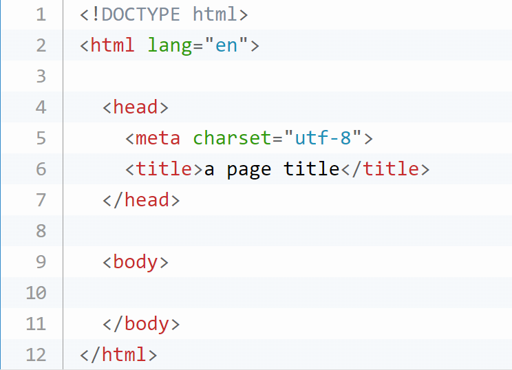

Question 1
- When HTML5 has become a standard? What were the main reasons for developing new standard?
Answer:
- On 1 November 2016, HTML 5.1 was released as a W3C Recommendation. On 14 December 2017, HTML 5.2 was released as a W3C Recommendation.
Question 2
- What is a difference between W3C HTML5 and WHATWG HTML Living Standard?
Answer:
- The W3C "HTML5" standard was snapshot-based (HTML5, HTML 5.1, etc.) and static, while the WHATWG "HTML living standard" is continually updated. The relationship had been described as "fragile", even a "rift", and characterized by "squabbling".
Question 3
Answer:

Question 4
- Comment on semantic and presentational markup. Why presentational markup is considered deprecated now?
Answer:
- Semantic HTML is a way of writing HTML that emphasizes the meaning of the encoded information over its presentation (look). HTML has included semantic markup from its inception, but has also included presentational markup, such as font, i and center tags. There are also the semantically neutral div and span tags.
Semantic markup focuses on the meaning and structure of content, making it easier for search engines and assistive technologies to understand. Presentational markup, on the other hand, focuses on how content should be displayed, which is considered deprecated because it mixes content with styling and makes it harder to maintain and adapt to different devices.
Question 5
- How you can check browser support for particular tag or attribute?
Answer:
You can check browser support for a particular tag or attribute by using websites like caniuse.com or MDN Web Docs. These resources provide information on browser compatibility for various HTML features.
Question 6
Answer:
HTML supports various media types and formats for embedding different types of media content within web pages. Here are some of the commonly supported media types and formats in HTML:
1. Images:JPEG (Joint Photographic Experts Group), PNG (Portable Network Graphics), GIF (Graphics Interchange Format), SVG (Scalable Vector Graphics), WebP (Web Picture Format), BMP (Bitmap Image)
2. Video:MP4 (MPEG-4 Part 14), WebM (WebM Project), Ogg (Ogg container format)
3. Audio:MP3 (MPEG Audio Layer III), WAV (Waveform Audio File Format), Ogg (Ogg container format)
4. Documents:PDF (Portable Document Format), DOCX (Microsoft Word Open XML Document), PPTX (Microsoft PowerPoint Open XML Presentation), XLSX (Microsoft Excel Open XML Spreadsheet), TXT (Plain Text), HTML (Hypertext Markup Language), XML (eXtensible Markup Language)
5. Other media types:CSS (Cascading Style Sheets), JavaScript (Text-based scripting language), Fonts (e.g., TrueType, OpenType, WOFF).
If you use other formats that are not officially supported, the browser may not be able to play the audio or video content correctly, leading to compatibility issues for users.My resources for recent tasks
-
- 1. https://www.oyova.com/blog/html5-and-your-content-what-to-do/#:~:text=HTML5%20was%20developed%20to%20address,party%20plugins%20like%20Adobe%20Flash
- 2. https://terminallearning.com/devHtml/htmlMinimal.html
- 3. https://www.quora.com/What-are-the-media-types-and-formats-supported-by-HTML#:~:text=Video%3AMP4%20(MPEG%2D4,)Ogg%20(Ogg%20container%20format)
Video
Video courtesy of Kenji's Weird Stories.
Audio
- Amazing songs (sometimes)
-
1. Twenty One Pilots - Tradpoor 1. Twenty One Pilots - Heavydirtysoul 1. Twenty One Pilots - The Pantaloon